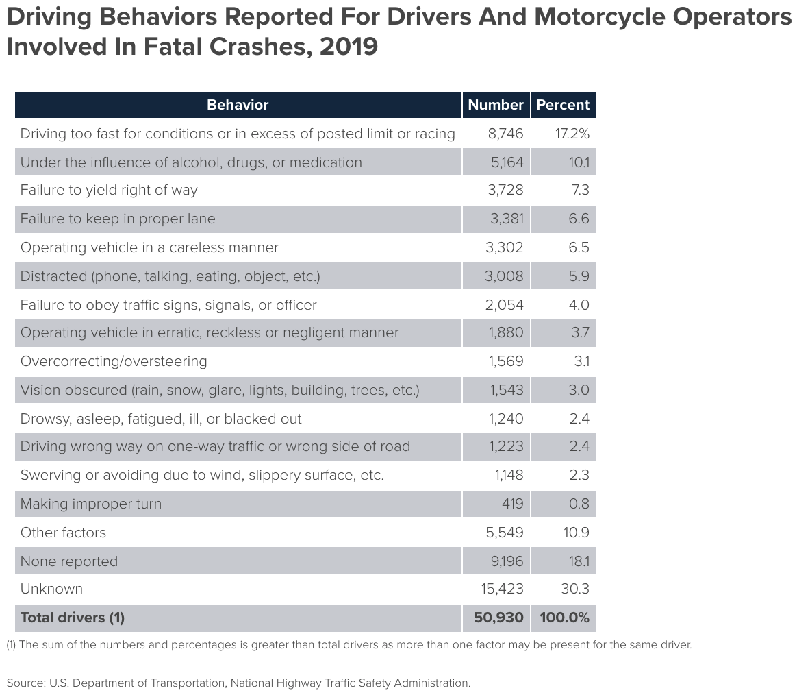

Like the other 90% of the population, I'm in the top 10% of drivers.
This post was made out of frustration at other drivers, and while I won't be leaving a note with a link to this on someone's windshield, I hope someone does reevaluate their driving behaviors after reading this or think about their current driving style.
First, my "golden rules" of driving: be predictable (GR1) and follow the law (to a reasonable extent) (GR2).
Being predictable allows other drivers to anticipate your actions and base their actions on what they think you're going to do. Using a turn signal allows cars behind you to slow down; following right-of-way rules leaves little room for confusion, thus little room for accidents.
It's important to note that being nice does not always translate to predictable. Someone waiting to turn left across traffic? Sorry, pal, you're gonna have to wait, because letting them in is not predictable. I promise that person isn't going to get mad at you, and good karma won't come your way.
Traffic laws are in place for a reason, mostly to keep us safe. Speed limits are to prevent us from going too fast, improper lane changes are to ensure we stick to our lane during appropriate times, and so on. Laws also enhance predictability, because it's predictable that others will follow the law.
Modeled after Rossi's classic laws, the Iron Law of Driving states that:
The expected decrease in driving time of any intentional driving action (e.g., switching lanes in rush hour, making a detour to avoid traffic) is zero.
Accident safety data can be examined to see what the most common types of accidents are and take steps to avoid those.
While there is a significant amount of data to sort through, one table in particular provides better info for this post:
Now, to go item-by-item (applicable GRs are listed at the end of each, if any):
As seen, a majority of the major fatality-related accidents a) are likely preventable, and b) violate one of the Golden Rules in some form. (I say likely because specifics aren't provided.)
u/wbeaty's comment on improving individual driving to improve traffic is a great summary of why traffic is:
A recent one is this: yes, a single driver can maintain constant speed; wiping out the growing waves which propagate backwards through the chain. But sometimes this doesn't work 100%. A better algorithm discovered ?2013? is to also monitor the driver directly behind your car, and to use your empty gap to speed up whenever the car behind you is approaching too fast. This tends to damp any large fluctuations commonly produced by an inattentive driver directly behind. Don't be like a solid wall, instead be like a dashpot. Perform this trick at the same time as the known task of absorbing the waves coming from ahead.
An older technique (long known to professional truckers) is to never close up your gap, never try to "block cheaters" or "punish interlopers" or any of that stuff. Instead, always encourage free merging. Try to get people to jump into the gap ahead of you. And, if a huge backup appears in one lane, the proper thing to do is to use the empty lane, and to merge in one place only: at the last minute. (Or, if you must merge early, then maintain a large gap in the through-lane, making late-merging possible.) Traffic often behaves like merging gear-teeth, and to keep the gears spinning requires empty spaces. The modern term for this is "do the zipper." Several state DOTs have started publicity campaigns about Zipper Merging.
Here's another from traffic physics: the optimum algorithms for highway driving are very different than those for in-city driving where traffic lights are present. For example, when we're down in the city-grid, if we maintain large gaps, then the next red light will block our progress. Or worse, we'll be pushing a whole column of traffic back into a red light; traffic which could have made it through. In the city-grid, a certain amount of tailgating is required, and big gaps may greatly reduce the flow. But on highways without red lights, it all works backwards. Without the traffic signals to pace the flow, large jams can spontaneously arise from nothing. The jams require an environment of aggressive tailgating before they can form. These jams can be partially thwarted by "anti-tailgaters," by drivers who maintain large forward gaps, and who drive at constant speed in order to prevent fluctuations from growing. Also, the large gaps will promote "zipper" or "gear teeth" rapid driving through merge-zones.
A less cutting-edge driving technique involves psychology. Observe congested traffic accurately, and eliminate all the myths and emotional bias which distorts our perceptions as drivers. A big one is this: each car on the road is actually a delay of only 1-2 seconds. It's nothing like a line at the grocery cash register. If a car merges into your gap, will you be late to work? What if ten cars jump in ahead of you, O the Humanity! :) Nope, even if 60 cars get ahead, that only delays you by a minute or two. Such a small a delay is insignificant for most commutes. It's down in the noise, a tiny fluctuation. Compared to a line at the grocery checkout, one shopping cart equals 50 to 200 cars ahead of you on the highway. But it doesn't feel that way! We all seem to be trapped in a delusional time-warp during commutes.
If we aggressively pass three other cars during congestion, it feels as if we're shortening our commute-time. Wrong, because if we want to genuinely shorten our commute, we'd have to drive a few MPH faster than average. Our position in line means nothing, when compared to actually driving faster. For example, on a half-hour commute, if we could drive 2MPH faster than everyone else, we'd have passed an entire mile worth of cars in the chain. So, if you fight like fury and manage to pass ten other drivers, twenty other drivers ...that's nothing. Instead you could have set your alarm clock 1min earlier in the morning, which puts you ahead by roughly sixty cars.
Or, here's another way to view this: if you walk onto the subway, or on a bus, should you try rushing to the front? Elbow everyone aside, knock down kids and old ladies? After all, each passenger ahead of you at the bus door might cause an entire second of delay. Yet when riding on the bus, there's no delusional time-warp. We don't usually have several other passengers viciously fighting for the seat closest to the front. If someone ever does shoulder their way to the front of the vehicle while crowing about how skilled and superior they are at bus-riding, the driver will stop the bus and call for the men in white coats! So: if you wouldn't do it on the bus, don't do it while highway commuting. When you're in rush hour, you're not in a road race. Instead, admit to the fact that you're "trapped on a bus," and if you take your seat and stop fighting with other commuters, then like magic the whole bus goes much faster.
Let's examine it paragraph-by-paragraph.
This is due to traffic waves, as seen in the video below. Note the black car in the 7-o'clock position at the 0:07 mark. It gets too close to the white car in front of it and is forced to slow down. This singular event causes the so-called wave, affecting many cars throughout the circle.
If the white car had more space in front of it (I understand there is limited space within the circle) and sped up after seeing the black getting too close, the wave likely would not have occurred at that time.
See also: trafficwaves.org
By getting into the non-merging lane sooner, this lengthens the line of cars in lane, causing traffic further down the road. I am not able to find literature detailing the efficiency increase in cars/time, but the logic is there.
First, let's look at some basic numbers for different trip distances and speeds. A trip of 5 mi takes 6.7 min at 45 mph, but only 6.0 min at 50 mph. This saves all of 40 seconds. The time savings decrease the faster you go at a constant distance.

On top of going over the speed limit, gas is being used at a unproportional rate compared to slower speeds. MPG For Speed claims:
- 3% less efficient at 60 mph
- 8% less efficient at 65 mph
- 17% less efficient at 70 mph
- 23% less efficient at 75 mph
- 28% less efficient at 80 mph
Plugging in actual numbers of 30 mpg, 100 highway miles, and $2.50/gal, the following table is found:
| Speed | Daily Travel Time | Effective MPG | Cost/day | Cost/year |
|---|---|---|---|---|
| 55 MPH | 109 min. | 30.0 | $8.33 | $3,040.45 |
| 60 MPH | 100 min. | 29.1 | $8.59 | $3,135.35 |
| 65 MPH | 92 min. | 27.6 | $9.06 | $3,306.90 |
| 70 MPH | 86 min. | 24.9 | $10.04 | $3,664.60 |
| 75 MPH | 80 min. | 23.1 | $10.82 | $3,949.30 |
| 80 MPH | 75 min. | 21.6 | $11.57 | $4,223.05 |
Your bottom line: If you normally travel at 75 mph, you could be saving yourself $813.95 per year if you drove at 60mph - and you'd only be making your total commute 20 minutes longer.
Proprioception is the "perception or awareness of the position and movement of the body". In the context of driving, it's the awareness of the position of the car on the road, both relative to the road/terrain itself and other drivers.
First, the car itself. Knowing how far your car stretches in all four directions allows you to know how much room you have in any direction to move, whether to avoid an obstruction, other driver, or simply change lanes.
Second, relative to other drivers. Is there a driver in your blind spot? Is there someone directly behind you? How close are they? How close are you to the person in front of you? How fast is the person coming up behind you?
Distractions come in many forms, but there are simple solutions to counteract the temptation.
Highlights from Edgar Snyder's Texting and Driving Accident Statistics (sources at the bottom of the page):
- The National Safety Council reports that cell phone use while driving leads to 1.6 million crashes each year.
- Texting while driving is 6x more likely to cause an accident than driving drunk.
- In 2015, 3,477 people were killed and 391,000 people were injured in motor vehicle crashes involving distracted drivers.
It's obvious that phoning and driving is dangerous, yet people insist on continuing to do it. In conjunction with discouraging the behavior, drivers should be made aware of other options, such as:
These can be prevented by simply not doing: don't eat (drinking is arguably fine), apply makeup before going to work, don't listen to music too loud or get too absorbed in a podcast, don't stare at the billboard.
Nothing needs to be said on this. Any amount of alcohol impairs you and your ability to drive. Driving and alcohol do not mix, no matter the quantity or type.
Marijuana should not be used while driving. From the CDC's What You Need to Know About Marijuana Use and Driving:
Marijuana, like alcohol, negatively affects a number of skills required for safe driving.
- Marijuana can slow your reaction time and ability to make decisions.
- Marijuana use can impair coordination, distort perception, and lead to memory loss and difficulty in problem-solving.
- The risk of impaired driving associated with marijuana in combination with alcohol appears to be greater than that for either by itself.
MacDonald et al. found that "reckless or reduced driving ability" was found for drivers under the influence of cocaine.
The drug's effects on driving should be determined on a case-by-case basis.
Caffeine has been shown to improve driving performance. I recommend keeping caffeine pills in the car in case drowsiness ever occurs.
Effects of coffee on driving performance during prolonged simulated highway driving:
The results showed that caffeinated coffee significantly reduced SDLP [standard deviation of lateral position, or the intralane movement] as compared to decaffeinated coffee, both in the first (p = 0.024) and second hour (p = 0.019) after the break. Similarly, the standard deviation of speed (p = 0.024; p = 0.001), mental effort (p = 0.003; p = 0.023), and subjective sleepiness (p = 0.001; p = 0.002) were reduced in both the first and second hour after consuming caffeinated coffee. Subjective driving quality was significantly improved in the first hour after consuming caffeinated coffee (p = 0.004).
The effects of caffeine on simulated driving, subjective alertness and sustained attention:
On a computerised task measuring sustained attention, participants who consumed caffeine demonstrated greater performance accuracy. Furthermore, on a driving simulator task benefits were also observed, with participants performing fewer steering wheel movements, making for a safer, accurate and more stable drive, compared with the decaffeinated condition.
More literature is summarized here.
Driver fatigue is a significant contributor to accidents:
The National Highway Traffic Safety Administration conservatively estimates that 100,000 police-reported crashes are the direct result of driver fatigue each year. This results in an estimated 1,550 deaths, 71,000 injuries, and $12.5 billion in monetary losses. These figures may be the tip of the iceberg, since currently it is difficult to attribute crashes to sleepiness.
As the CDC link suggests, "If you feel fatigued while driving: pull over, drink a cup of coffee [or take a caffeine pill], and take a 15-30 minute nap before continuing. The effects are only temporary – the only 'cure' for fatigue is sleep".
This Driving in Bad Weather Fact Sheet provides useful information for driving in rain, fog, and ice/sleet/snow. While waiting out the bad weather is always the best option, there are situations in which one has to drive.
SFD is taught in every driver's education course across the country, yet I constantly see it violated on the highway. On top of that, it's sense (I leave the "common" out, because it's not-so-common). The standard SFD is measured in time, not length: three seconds.
SFD is based on a few things:
And can be calculated fairly simply (depending on how you define reaction time, the "time to press brake" variable may be irrelevant):
Stopping distance = (reaction time + time to press brake) x speed + braking distance
Here's a simple scenario: You are driving 72 mi/h = 106 ft/s (sorry, non-American readers) on a dry road in a regular sedan. The vehicle in front of you is only 2 seconds ahead (106 ft/s × 2 = 212 ft) and suddenly crashes into a stopped vehicle, instantly stopping. Are you able to stop in time to avoid hitting the vehicle ahead of you?
In his paper Brake Reaction Times and Driver Behavior Analysis, Summala finds that average time is 1.0-1.3 s. Let's give you the benefit of the doubt and make calculating this disaster easy: your reaction time is 1.0 s. Based on this table, the braking distance ("Braking Deceleration Distance") at 106 ft/s is 248 ft. In summary:
In short, you're fucked a second before impact, and there's literally nothing you can do about it—no swerving, no jumping, no miracles. The appropriate following time based on these conditions is 354 ft, or 3.44 s, and that's in excellent conditions with a superb reaction time! Yeah, right.
I use 3 seconds for 0-45 mph, 4 seconds for 45-60 mph, and 5+ seconds for 60+ mph. These times also give the driver behind you adequate time to slow down since you don't have to slow down as quickly.
SFD also applies (in a sense) to being stopped: there should be enough room between yourself and the car in front of you that you would not hit them were you to be rear ended.
Scanning the road involves both the front and rear of the vehicle.
The front is done by simply looking at the incoming terrain in a horizontal pattern. This is to check for pedestrians, vehicles coming from cross-streets, vehicles turning onto your street, balls lost by children, etc.
The back is done by checking all three mirrors: two sideview and one rearview. If properly adjusted, these provide a full view of the vehicle (with a little bit of maneuvering by the driver for some tricky spots).
Some random pieces of advice that some drivers may not be aware of:
Warning: this section may be controversial to some. All of the following should be practiced in safe conditions.
Drivers should be able to drive in all possible and reasonable conditions, both environmental and personal. Expecting a south Texan to be a superb ice driver is unreasonable. But what happens when something goes awry and a car still needs to be driven?
Here are some driving exercises to practice in a safe environment in case of needing to use it later on.